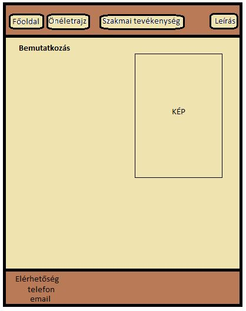
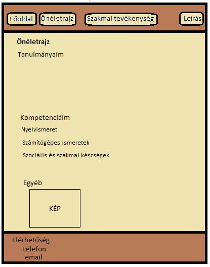
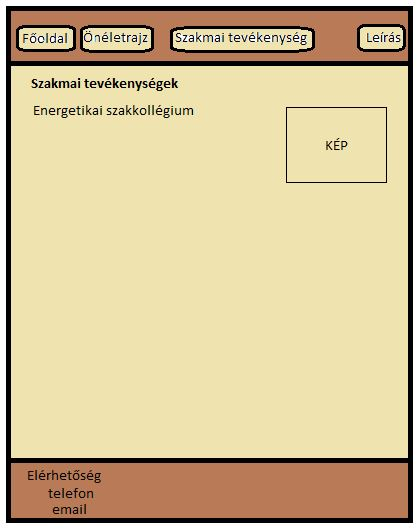
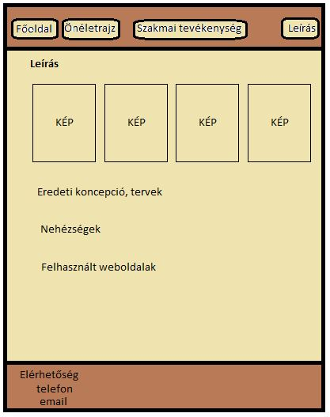

Leírás
Eredeti koncepció, tervek
   
Hasonló elképzeléseim voltak, mikor elkezdtem elkészíteni az oldalakat. Nagyon örülök, hogy a terveimet sikeresen meg tudtam valósítani.
Eleinte más színvilágot álmodtam meg, de sokkal jobban tetszik ez a kicsit zöldes hatás. Ezenkívül kevesebb képet kívántam beszúrni, de szerintem a több kép még kedvesebbé teszi a weboldalt.
Nehézségek
- Problémám volt a képek lekicsinyítésével. Nem akart sikerülni, pedig többféleképpen is megpróbáltam, de szerencsére végül meg tudtam oldani.
- Valamint kezdetben egy szöveg körbefuttatása egy kép körül is nehézséget okozott, de próbáltam végiggondolni és végül ez is sikerült.